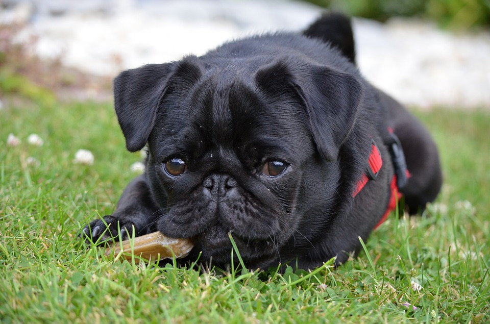

Название породы: Мопс.
Страна происхождение: Китай.
Вес взрослой собаки: 6-10кг.
Рост (высота в холке): 30-35см.
Продолжительности жизни: 12-15 лет.
Популярные клички: Джагер,Гомер,Вектор,Бандит.
Больше информации